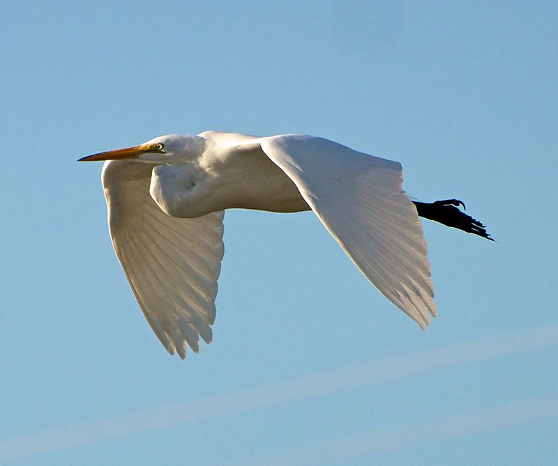

The great egret (Ardea alba), also known as the common egret, large egret, or (in the Old World) great white egret or great white heron is a large, widely distributed egret, with four subspecies found in Asia, Africa, the Americas, and southern Europe, recently also spreading to more northern areas of Europe. Distributed across most of the tropical and warmer temperate regions of the world, it builds tree nests in colonies close to water.
Like all egrets, it is a member of the heron family, Ardeidae. Traditionally classified with the storks in the Ciconiiformes, the Ardeidae are closer relatives of pelicans and belong in the Pelecaniformes, instead. The great egret — unlike the typical egrets — does not belong to the genus Egretta, but together with the great herons is today placed in Ardea. In the past, however, it was sometimes placed in Egretta or separated in a monotypic genus Casmerodius.
The Old World population is often referred to as the "great white egret". This species is sometimes confused with the great white heron of the Caribbean, which is a white morph of the closely related great blue heron.
The scientific name comes from Latin ardea, "heron", and alba, "white".
